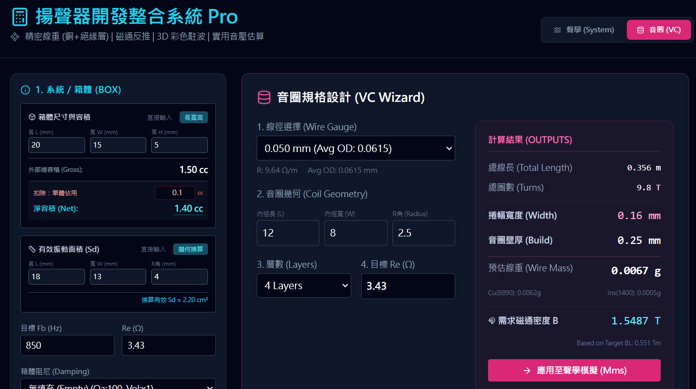
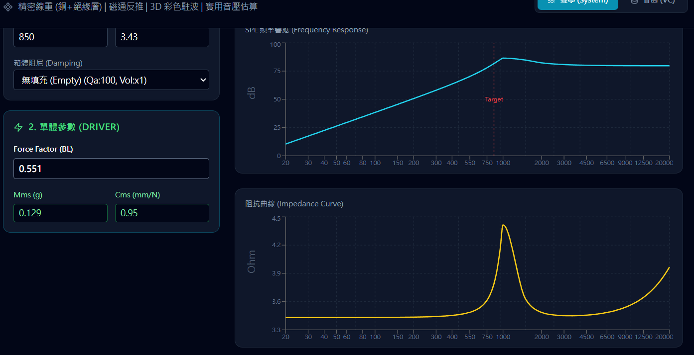

結構位移預測
提早 analysis 揚聲器震動模態，避免機構共振與異音干擾。
磁場效能優化
模擬微型揚聲器磁路，確保在極限空間內達到最佳電磁驅動力。
系統聲場分析
預測出音路徑與聲學特性，確保系統性能達到目標總聲壓級(SPL)。

指標化系統分析
即時計算 3D 箱體駐波 (Box Resonance) 與系統頻率，輔助早期決策。

音圈規格設計
精密線重、磁通反推計算，確保單體設計精確。

SPL 頻率響應預測
即時預估實用音壓，取代傳統繁瑣的 Excel 人工推算。
結合聲學、機構與模擬，建立可複製的工程流程，推動研發從經驗導向邁向數據導向。

THANK YOU
I look forward to the opportunity to join the team.